2020.04.19
2006年に村上ファンド事件で逮捕された事で有名な
「もの言う株主」と言われた日本の投資家です。
事件発覚後の記者会見で「お金もうけは悪い事ですか？」と発言して
物議をかもし出しました。
世の中の大半の人は彼の印象は悪く、「金の亡者」と言う感じでしょうか。
私も以前は同様な印象でしたが、最近はガラリと印象が変わりました。
その理由になる最近の彼の行動を紹介します。
その後、村上氏は、「村上財団」を創設し、長女の絢（あや）さんを代表理事にされています。
その村上財団より医療従事者向けにサージカルマスク10万枚の支援を実施されました。
4月10日に受付を開始して翌11日朝には10万枚に達しました。
そして現在続々と医療機関よりお礼のツイッターが届います。
村上氏の書籍に
「いま君に伝えたいお金の話」があって私も読みましたが、
その中で「お金があれば人を助けることができる。」とあります。
まさに今回の活動は、そのことを実行されたと思います。
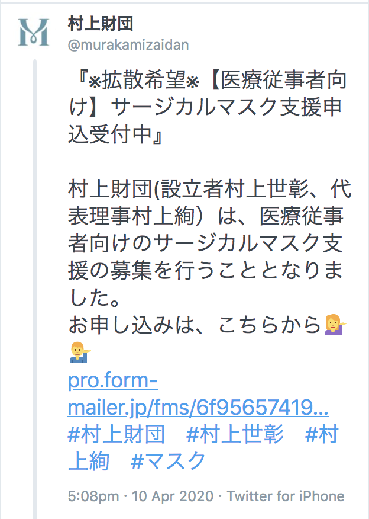
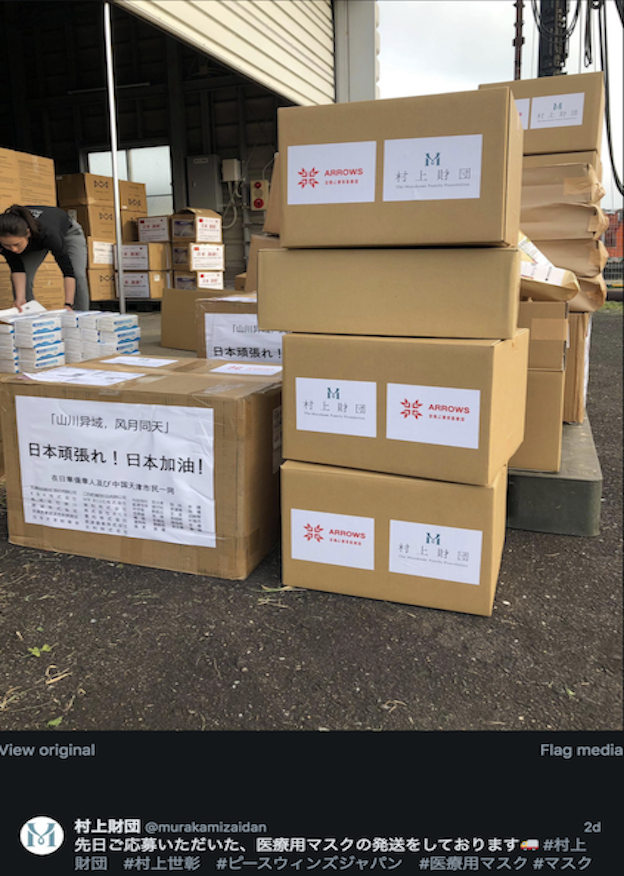
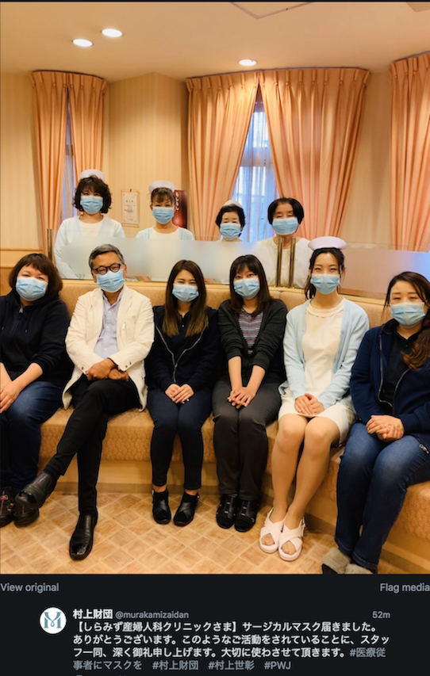
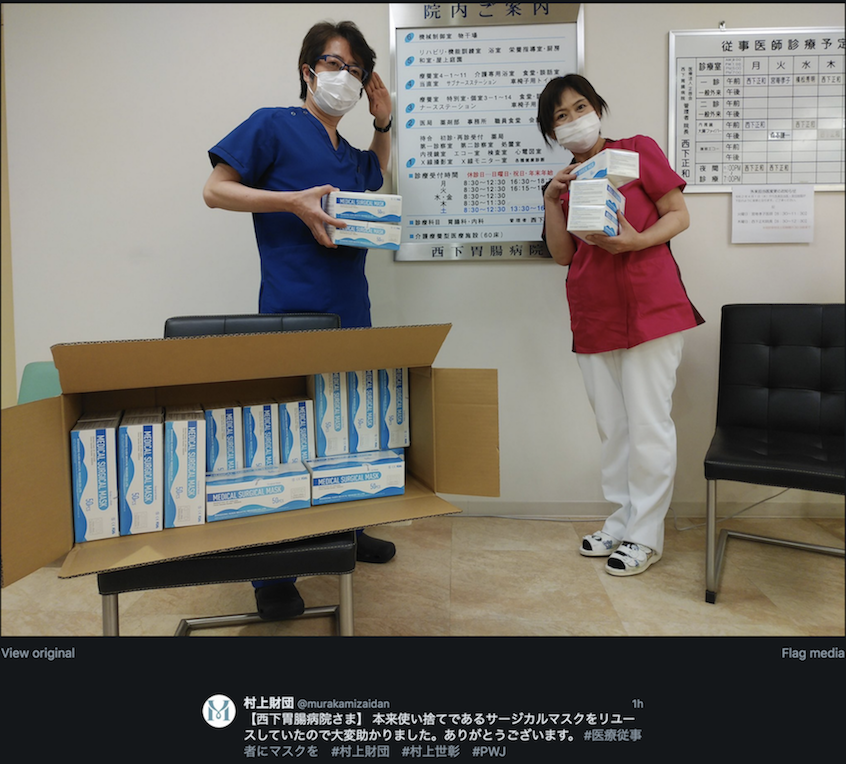
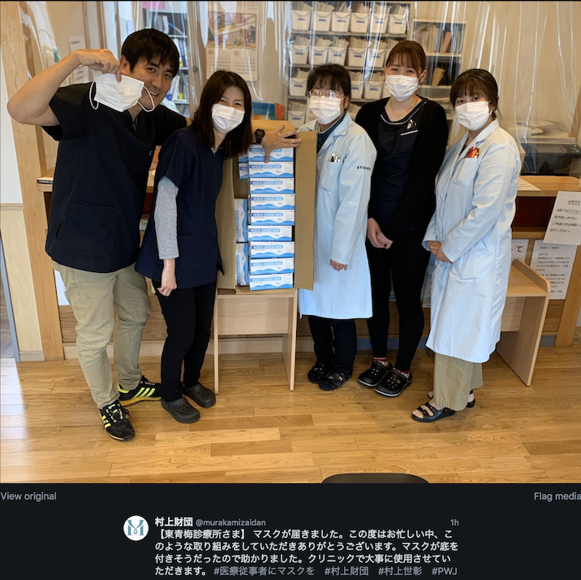
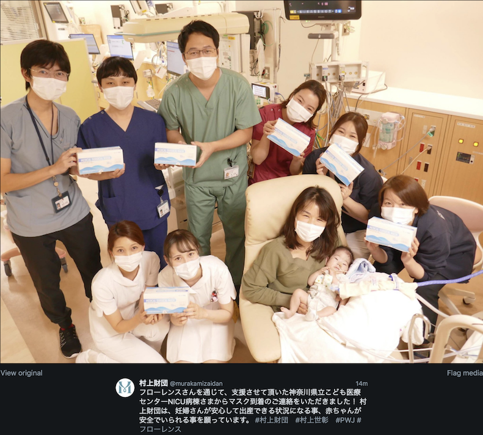
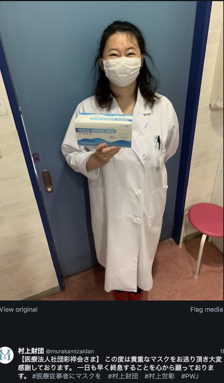
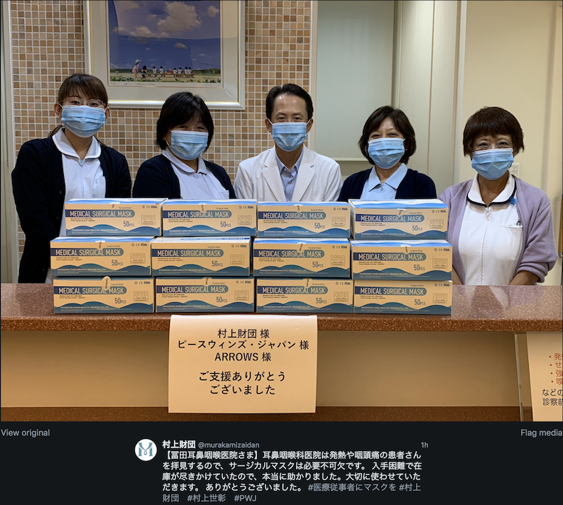
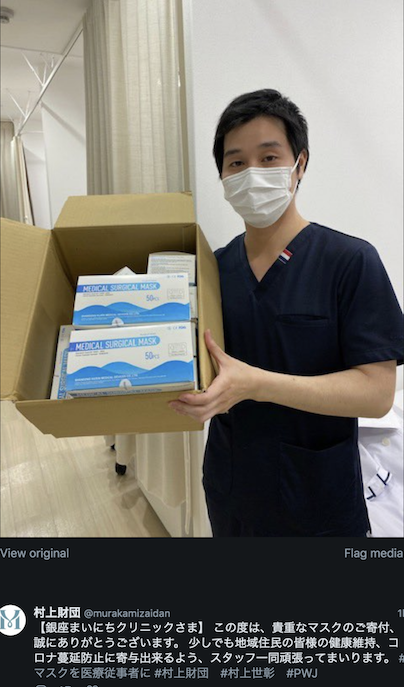
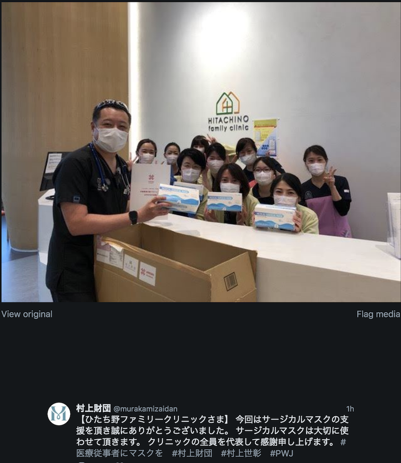
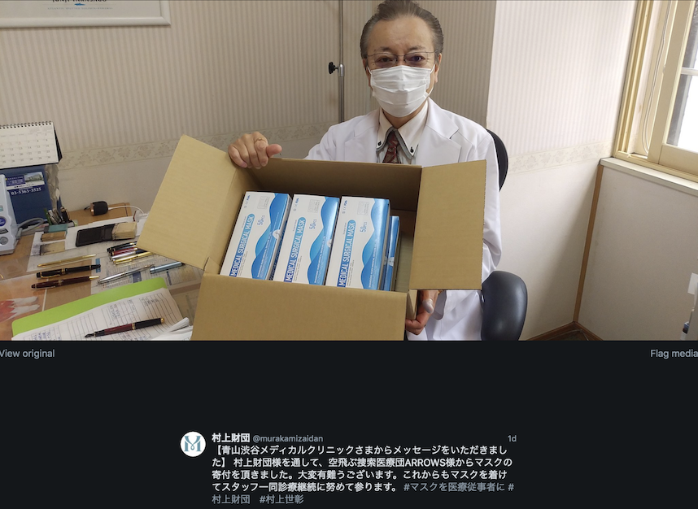
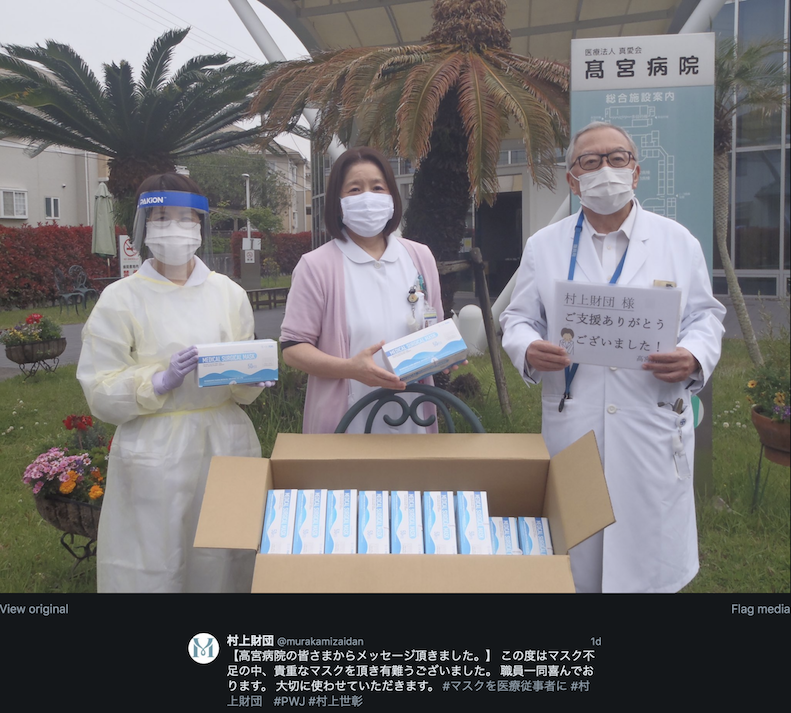
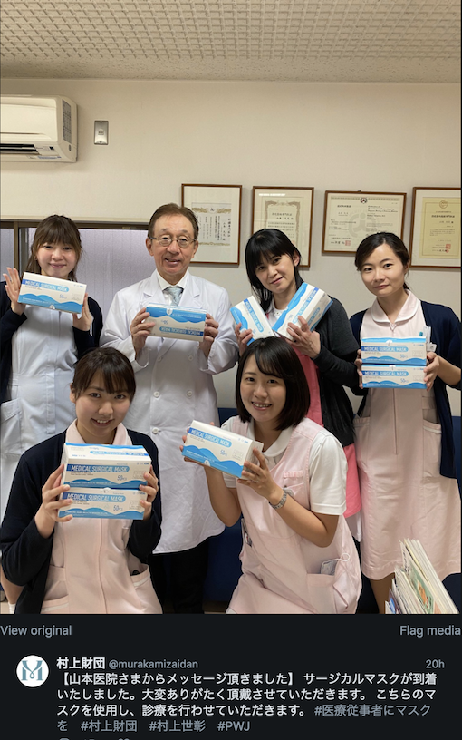
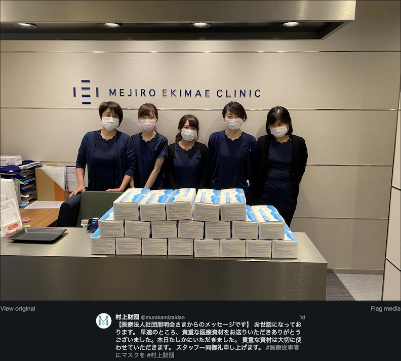
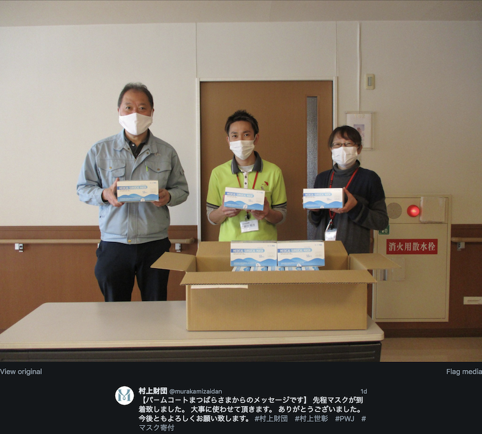
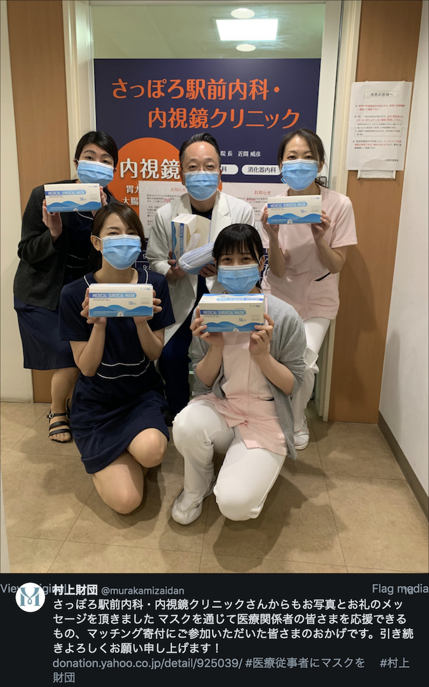
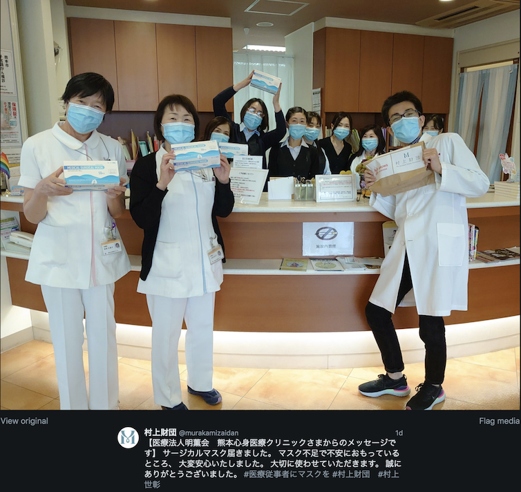
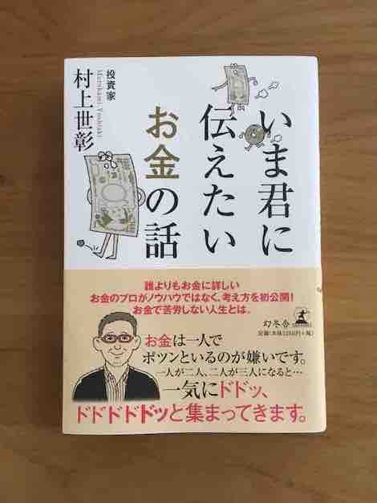
明日20日（月）NHK総合で村上氏関連の放送があります。
「ストーリーズ」という番組です。
お金の勉強 始めてみませんか？